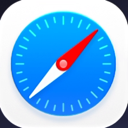
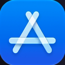
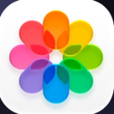
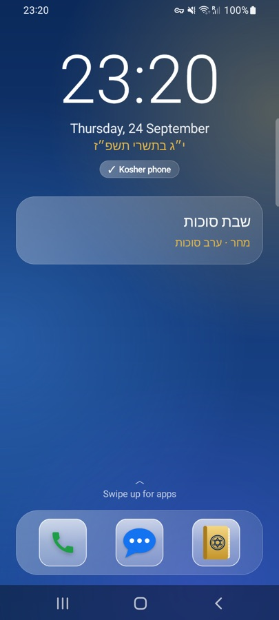

זה טלפון.
כל אפליקציה, כל אתר, כל התראה. הכול, כל הזמן.
עכשיו, מטהרים אותו.
כל מה שלא שייך נשאב החוצה.
זה טלפון כשר.
רק מה שבחרתם. רק הקוד פותח אותו שוב.





פונים לירושלים.
בדיוק.
מצפן מזכוכית נוזלית שמכוון לקודש הקודשים בדיוק מהמקום שבו אתם עומדים, מראה שבודקת את התפילין, וסידור ולוח שמחליקים ביניהם.


מצפן לירושלים
מחושב מהמיקום שלכם ב-GPS להר הבית, לפי הצפון האמיתי, עם פלס ורטט עדין כשאתם מכוונים.
מראה לתפילין
המצלמה הקדמית מוצאת את התפילין של ראש ואומרת אם הן באמצע ועל השיער ולא על המצח. שום דבר לא מוקלט.
מחליקים בסידור
בין חול, שבת ומועדים, ופרק אחר פרק בתהלים.
מחליקים בלוח
שמאלה למחר, ימינה לאתמול. גם בין חודשים.
עברית או אנגלית
בוחרים בהגדרות. שמות התפילות נשארים בעברית.
סינון שאפשר לכבות לבד הוא לא באמת סינון. עם Kosher Switch, האדם שאתם סומכים עליו בוחר את הקוד, ורק הקוד הזה פותח את הטלפון שוב.
רוב האנשים חושבים שסינון
הורס את הטלפון.
חלק באמת הורסים. הם נלחמים בטלפון כל היום. Kosher Switch משנה את הטלפון פעם אחת, ואז פשוט לא מפריע.


איור להמחשה. יש סינונים שעובדים טוב; רבים מרגישים ככה.
שומרים על הסמארטפון.
מוותרים על מה שלא שייך.
רוב המשפחות תקועות בין סמארטפון פתוח לבין טלפון פשוט בלי WhatsApp, בלי ניווט ובלי אפליקציית בנק. אנחנו חושבים שטלפון יכול להיות גם וגם.
מישהו אחר מחזיק את המפתח
מי שבוחר את הקוד הוא היחיד שיכול לפתוח את הטלפון שוב. לא מי שמחזיק אותו ביד.
הטלפון עצמו משתנה
לא חוסם שאפשר לדלג עליו. נשארות רק האפליקציות שלכם, האינטרנט נסגר, וזה נשאר ככה גם אחרי הפעלה מחדש.
לחיצה לטלפון כשר
מהלוח הנפתח באנדרואיד, או ממרכז הבקרה באייפון.
דפדפנים כברירת מחדל
העצה שלנו לטלפון כשר. אתם מחליטים מה להוסיף.
נוסחים בסידור
אשכנז, ספרד ועדות המזרח, עם לוח וזמני היום.
בלי דפדפן.
גם לא כשר.
אין סינון שתופס הכול, והאינטרנט הפתוח הוא בדיוק מה שטלפון כשר משאיר בחוץ. לכן Kosher Switch מגיע בלי דפדפן. אפליקציות כמו WhatsApp או Waze עדיין יכולות להתחבר כשאתם מאשרים.
🌐 דפדפן
כבוי כברירת מחדל באנדרואיד ובאייפון. אם משפחה באמת צריכה, האפשרויות הבטוחות ביותר קיימות, והאפליקציה שואלת שוב לפני.
💬 העוזר
עובד בלי אינטרנט, עם הגנות בעברית ובאנגלית. גם הוא כבוי כברירת מחדל.
📱 רק מה שצריך
שיחות, הודעות, מצלמה, ניווט, סידור ולוח. ורק המעטות האלה מתחברות לאינטרנט.
אנדרואיד או אייפון.
כל אחד עובד כמו שהטלפון שלו מאפשר.
Kosher Switch
לאנדרואיד
מסך בית כשר משלו, אינטרנט רק לאפליקציות שאישרתם, וסינון משפחתי. סמסונג, פיקסל, שיאומי וטלפונים עם מקשים.
חדש · 1.4Kosher Switch
לאייפון
בנוי על זמן המסך של אפל: אפליקציות מוסתרות או נעולות, אתרים חסומים, ומסך בית כשר ורגוע.
ב-App StoreKosher Switch לבתי ספר
כל תלמיד. כל מכשיר. כשר. בית הספר קובע מה מותר, וההורים מחזיקים את הקוד.
 המכשיר שייך לבית הספר שלכם
המכשיר שייך לבית הספר שלכם
לילד שלכם.
לכם עצמכם.
טלפון כשר עובד הכי טוב כשמי שמשתמש בו לא מחזיק את המפתח.
הורים
תנו לילד טלפון בלי לתת לו את האינטרנט. אתם בוחרים את האפליקציות ואת הקוד; הוא מקבל שיחות, הודעות, מצלמה, סידור ולוח.
- רק אתם יכולים לצאת ממצב כשר
- אי אפשר למחוק, גם לא אחרי הפעלה מחדש
- באייפון, שיתוף משפחתי הופך אתכם ליחידים שיכולים להסיר אותו
אתם עצמכם
רוצים טלפון כשר אבל לשמור על הסמארטפון? תנו את הטלפון למישהו שאתם סומכים עליו, בן או בת זוג, הורה, רב או חברותא, ותנו לו לבחור את הקוד.
- בלי טלפון שני בכיס
- הטלפון הרגיל חוזר עם הקוד
- אין סינון לדלג עליו
כל המשפחה
לכל טלפון קוד משלו ורשימת אפליקציות משלו. פשוט מספיק לסבא וסבתא, קפדני מספיק לנער.
- עובד על הטלפונים שכבר יש לכם
- עברית ואנגלית
- בלי חשבונות ובלי פרסומות
מסלול אחד בשבילך.
ואחד לכל המשפחה.
בלי פרסומות, בלי חשבונות, בלי מכירת מידע. יציאה ממצב כשר תמיד בחינם.
אישי
טלפון אחד.
€8.99 לחודש
€99.99 לשנה
- מצב כשר, סידור, לוח ופתקים
- כל העדכונים
משפחתי
כל הטלפונים והאייפדים במשפחה.
€29.99 לחודש
€229.99 לשנה · חיסכון של 36%
- באייפון: משותף דרך שיתוף משפחתי של אפל (עד 6 אנשים)
- באנדרואיד: מפתח אחד לעד 6 טלפונים
- לכל טלפון קוד ואפליקציות משלו
באייפון המסלולים כבר ב-App Store. באנדרואיד המסלולים בתשלום יתחילו בקרוב, ועד אז זה בחינם. המחירים כוללים מע״מ; מחוץ לגוש האירו המחיר דומה במטבע המקומי.
טוב לדעת.
האם בטלפון כשר צריך דפדפן?
אנחנו ממליצים בלי דפדפן בכלל, גם לא מסונן או ”כשר“. אין סינון מושלם, ולכן Kosher Switch מגיע בלי דפדפן. אם באמת צריך, אפשר לאשר לבד: באנדרואיד הדפדפן הכשר מכסה תמונות של אנשים, וכל אפליקציה מותרת עוברת דרך הסינון המשפחתי. זו העצה שלנו; הבחירה שלכם.
האם Kosher Switch הוא סינון כשר?
הוא עובד כמו סינון כשר לכל הטלפון. במצב כשר רואים רק את האפליקציות שבחרתם, האינטרנט חסום חוץ מהאפליקציות שאישרתם (וגם הן עוברות סינון משפחתי עם SafeSearch), ואי אפשר להתקין, למחוק או לשנות שום דבר בלי הקוד. בניגוד לסינון דפדפן, אי אפשר לעקוף אותו עם אפליקציה אחרת או דפדפן אחר.
האם אפשר להסתיר תמונות של אנשים, כמו בסינון למחשב?
כן, בדפדפן הכשר (חדש בגרסה 1.3.2). כל תמונה נבדקת בטלפון לפני שהיא מופיעה, וכל תמונה שיש בה אדם נשארת מכוסה, גם בחיפוש תמונות של גוגל. תמונות בלי אנשים, כמו נוף, אוכל ומפות, מוצגות כרגיל. כשתמונות באתרים כבויות, אפליקציית גוגל ודפדפנים אחרים נשארים בלי אינטרנט, והחיפוש נעשה בדפדפן הכשר.
יש סינון כשר לטלפונים של סמסונג?
כן. Kosher Switch עובד על טלפוני Samsung Galaxy עם אנדרואיד 10 ומעלה, כולל סדרות A ו-S, ועל טלפונים עם מקשים כמו Qin.
מה זה Kosher Switch?
אפליקציה שהופכת טלפון אנדרואיד או אייפון רגיל לטלפון כשר בלחיצה אחת, ובחזרה רק עם קוד. מתאים להורים שמכינים טלפון לילד, ולמי שרוצה טלפון כשר לעצמו עם אדם שהוא סומך עליו שמחזיק את הקוד. כולל סידור ותהילים, לוח ושעות היום, ועוזר קולי שעובד בלי אינטרנט.
איך הופכים טלפון רגיל לטלפון כשר?
מתקינים את Kosher Switch פעם אחת (עם קוד QR או מחשב), בוחרים אילו אפליקציות מותרות וקוד, ולוחצים על המתג. במצב כשר רואים רק את האפליקציות שנבחרו, האינטרנט חסום חוץ ממה שמותר, ואי אפשר להתקין או למחוק אפליקציות. זה עובד כמו סינון כשר לכל הטלפון.
כמה זה עולה?
אישי: €8.99 לחודש או €99.99 לשנה. משפחתי: €29.99 לחודש או €229.99 לשנה, לכל הטלפונים במשפחה. באייפון המסלולים כבר ב-App Store; באנדרואיד הם יתחילו בקרוב, ועד אז זה בחינם. בלי פרסומות, בלי חשבונות, ויציאה ממצב כשר תמיד בחינם.
יש גרסה לאייפון?
כן, היא ב-App Store. היא בנויה על זמן המסך של אפל, ולכן לא צריך מחשב ולא איפוס. אייפון לא מאפשר לאף אפליקציה להחליף את מסך הבית או לחסום את הטלפון וההגדרות, ולכן באייפון Kosher Switch נותן מסך בית כשר עשוי מווידג׳טים ופוקוס כשר.
אני רוצה את זה לעצמי. מי צריך להחזיק את הקוד?
מישהו שאתם סומכים עליו ופוגשים לעיתים קרובות: בן או בת זוג, הורה, הרב או חברותא. התקינו את Kosher Switch, תנו לו את הטלפון בשלב ”בחירת קוד“, ותנו לו להקליד בלי שתסתכלו. כשאתם צריכים את הטלפון המלא, בקשו ממנו.
למה ההתקנה צריכה קוד QR או מחשב?
אנדרואיד מאפשר לאפליקציה לנעול טלפון רק אם היא הוגדרה כ”בעלים של המכשיר“ בדרך מיוחדת, חד־פעמית. הכלל הזה מגן על כולם מאפליקציות זדוניות. כל אפליקציות ההגנה והסינון באנדרואיד עובדות כך.
אפשר לעקוף את המצב הכשר?
מצב כשר חוסם את ההגדרות, התקנה והסרה של אפליקציות, שינוי חשבונות, שינויי VPN ו-DNS, איפוס מההגדרות, מצב בטוח וניפוי באגים ב-USB, והוא נשאר גם אחרי הפעלה מחדש. איפוס מלא עם הכפתורים של הטלפון לא ניתן לחסימה על ידי שום אפליקציה, אבל הוא מוחק את כל הטלפון, כך שזה לא יכול לקרות בלי שישימו לב. אין טלפון שבלתי אפשרי לעקוף ב-100%; זו נעילה חזקה, לא התחייבות.
העוזר צריך אינטרנט?
לא. הוא רץ כולו על הטלפון. חלק הבינה המלאכותית הוא הורדה אופציונלית של 1.6GB ב-Wi-Fi, פעם אחת במצב פתוח. שום דבר שאתם שואלים לא נשלח לשום מקום. זה מודל קטן, אז התשובות פשוטות יותר, ומתכונים עוברים בדיקת כשרות אוטומטית.
על אילו טלפונים זה עובד?
כל טלפון אנדרואיד 10 ומעלה עם מעבד 64 ביט: סמסונג, גוגל פיקסל, שיאומי ו-Redmi, טלפונים עם מקשים כמו Qin F21 Pro, מוטורולה, וואןפלוס ועוד. נבדק במלואו על Samsung Galaxy A32 5G (אנדרואיד 12), ועוד טלפונים בבדיקה. התקנה עם QR צריכה גם את מסך ההגדרה של גוגל.
למה צריך אפשרויות מפתחים, כשאפליקציות אחרות לא צריכות?
רוב האפליקציות שולטות רק בעצמן. Kosher Switch שולט בכל הטלפון: הוא מסתיר אפליקציות אחרות, מנתק להן את האינטרנט ונועל את ההגדרות. אנדרואיד נותן את ”המפתח הראשי“ הזה רק דרך התקנה מיוחדת חד־פעמית, כדי שאף אפליקציה שהורדה (או וירוס) לא תוכל לנעול טלפון לבד. ההתקנה מוכיחה שבעל הטלפון באמת רוצה בזה. לכל אפליקציות הסינון באנדרואיד יש את אותו שלב.
זה הכשר?
לא. Kosher Switch הוא כלי. לטלפון עם הכשר, פנו לרב שלכם או לגוף כשרות מוכר. ההורים נשארים אחראים לשימוש בטלפון.
איך מסירים אותו?
באנדרואיד הוא מגן על עצמו כבעלים של המכשיר, ולכן הסרה דורשת איפוס להגדרות היצרן. גבו את הטלפון קודם. באייפון, יוצאים ממצב כשר עם הקוד ומוחקים כמו כל אפליקציה; אם הורה הגדיר אותו דרך שיתוף משפחתי, ההורה צריך לאשר.
שאלות? כתבו לנו.
משפחות, בתי ספר, ארגונים וכל מי שסקרן. אנחנו קוראים כל הודעה ועונים בעברית או באנגלית.
או כתבו לנו ל- kosherswitch@outlook.com